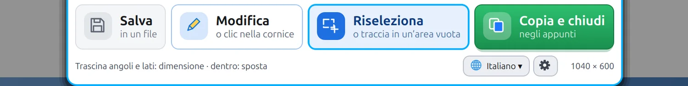
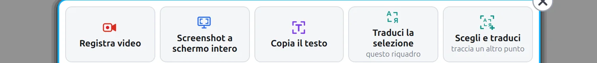
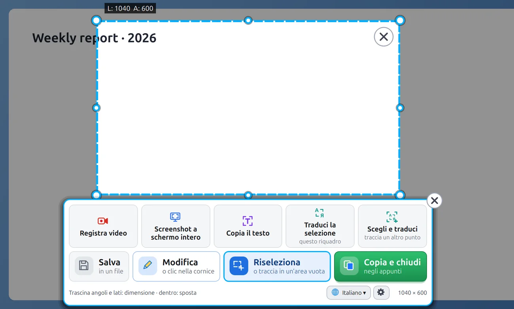
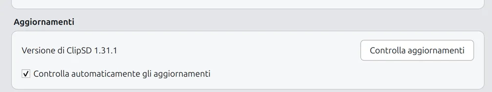
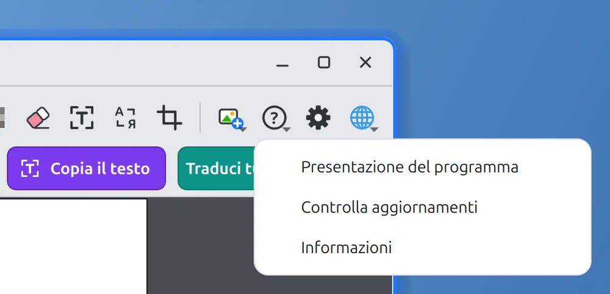
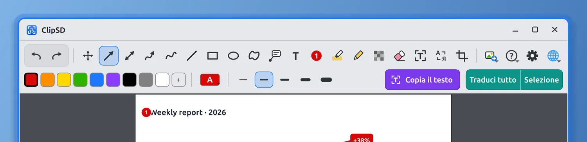
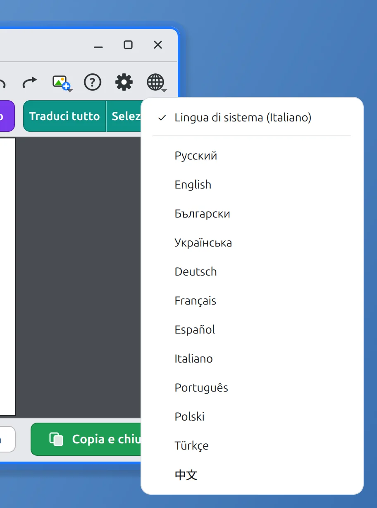
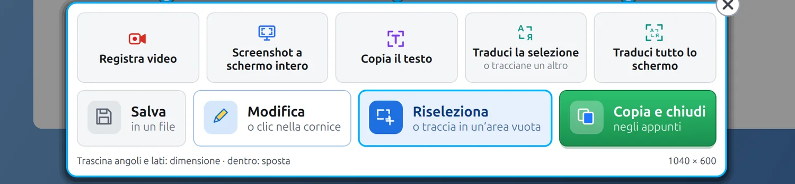
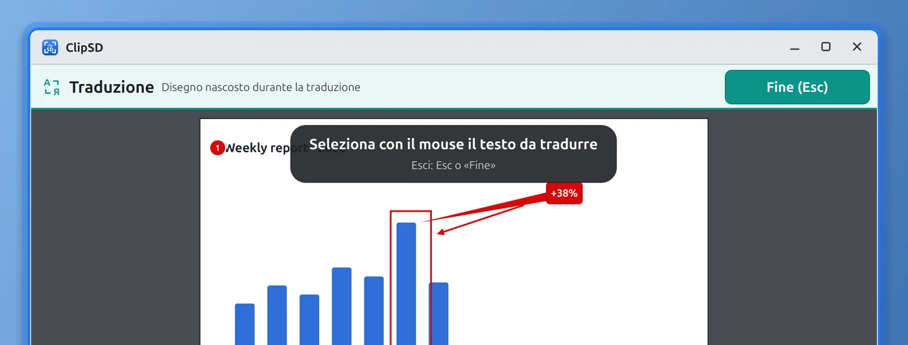
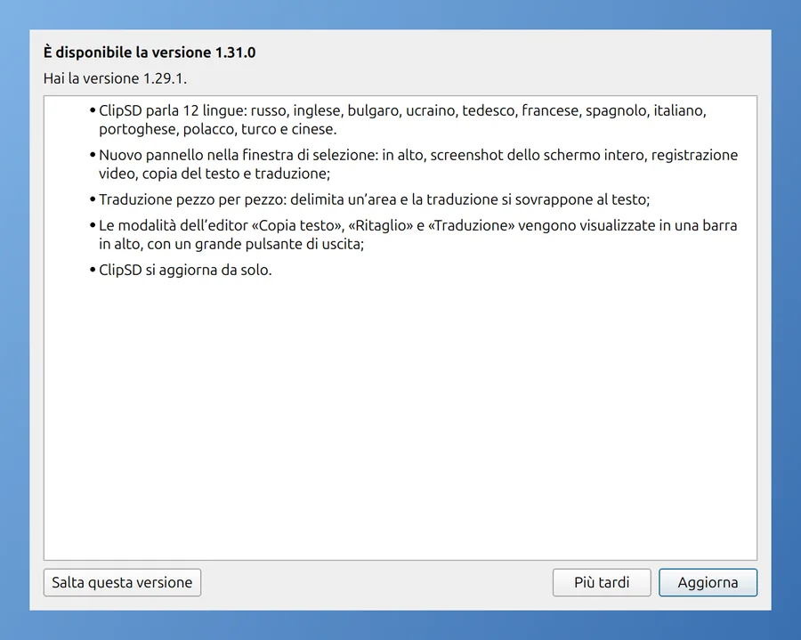

Cronologia delle versioni
Le nuove versioni compaiono prima nel canale Telegram di ClipSD (si apre in una nuova scheda).
Versione 1.32.0
uscita il
- Nuovo editor. Gli strumenti sono raccolti in gruppi (frecce e linee, forme, scritte, disegno e altri). Il pulsante «Tutti gli strumenti» li mostra tutti insieme, con i loro tasti. Per uno screenshot stretto anche la finestra dell'editor è stretta: i gruppi si chiudono e tutti gli strumenti restano a portata di mano.
- Menu del tasto destro. Il menu di un oggetto selezionato non copre più la sua cornice e le maniglie: si apre accanto all'oggetto.
- Campanella delle notifiche. Nell'editor è arrivata una campanella, «Notifiche»: una nuova versione con il pulsante «Aggiorna», le novità della versione installata e brevi messaggi del programma. La nuova versione viene segnalata prima dalla campanella; la finestra che propone l'aggiornamento compare più tardi, se nel frattempo non avete aggiornato.
- Presentazione della finestra di selezione. Al primo screenshot la finestra mostra passo passo cosa fanno i pulsanti del pannello. Per rivederla, aprite il menu dell'icona accanto all'orologio: «Presentazione della finestra di selezione».
- Accanto ai nomi delle lingue ora ci sono le bandiere. La lingua scelta nelle impostazioni cambia subito, senza chiudere la finestra.
- Le impostazioni sono divise in sezioni. Un elenco a sinistra (Generale, Schermata, Editor, Testo e traduzione, Aggiornamenti, Informazioni) con la ricerca sopra. La finestra ricorda quale sezione era aperta.
- Valutare ClipSD. Potete valutare ClipSD da 1 a 5 stelle e lasciare una recensione: menu dell'icona o «?» nell'editor, «Valuta ClipSD». Ogni tanto è il programma stesso a proporlo, ma solo quando non state facendo uno screenshot e non lavorate nell'editor.
- Screenshot più nitidi sugli schermi ridimensionati. Sugli schermi ridimensionati (125%, 150%, 200%) gli screenshot sono più nitidi: l'editor li mostra senza sfocature. Su Linux browser e documenti li incollano nella dimensione originale, senza allungarli. Nelle impostazioni, sezione «Schermata», potete scegliere la «Dimensione dello screenshot»: risoluzione piena o come sullo schermo.
- Finestre dall'aspetto più calmo. Un aspetto più calmo e un testo più leggibile: scritte e pulsanti con più contrasto, il pulsante verde principale più scuro e, di base, una cornice sottile per la finestra dell'editor.
- La finestra «Informazioni». La finestra «Informazioni» contiene ora le condizioni d'uso del nome e dell'icona di ClipSD e un link alle novità su Telegram.
Versione 1.31.2
uscita il
- Linux: l'aggiornamento torna a installarsi da solo sui sistemi più recenti (ad esempio Ubuntu 26.04). Prima veniva scaricato, ma non installato.
- Linux: sui sistemi più recenti tornano a funzionare il riconoscimento del testo, i link e l'avvio automatico.
- Se un aggiornamento non si installa, compare una finestra con i pulsanti «Riprova» e «Segnalazione di errore». La segnalazione non contiene il nome utente né percorsi di cartelle personali.
- Dopo l'aggiornamento la finestra «Novità della versione» inizia con la riga «Aggiornamento installato».
Versione 1.31.1
uscita il
- Nella finestra di selezione dell'area si possono cambiare subito la lingua e aprire le impostazioni: in basso nella barra, a sinistra della dimensione, ci sono un globo con il nome della lingua e un ingranaggio.

- La traduzione è divisa in due pulsanti: «Traduci la selezione» traduce il riquadro già presente, «Scegli e traduci» permette di tracciare un altro punto. La traduzione di tutto lo schermo passa nella riga della modalità di traduzione, con il pulsante «Tutto lo schermo».

- La barra nella finestra di selezione è circa il 15% più compatta e si posiziona accanto al riquadro invece che sopra: sotto, sopra, a destra o a sinistra. Va dentro il riquadro solo se fuori non c'è spazio.

- Nelle impostazioni c'è una nuova sezione «Aggiornamenti»: versione, pulsante «Controlla aggiornamenti» e casella per il controllo automatico. Il pulsante «?» dell'editor ora apre un menu: «Presentazione del programma», «Controlla aggiornamenti» e «Informazioni».


- Nell'editor «Annulla» e «Ripeti» sono all'inizio della riga su uno sfondo a parte. Per impostazione predefinita gli strumenti sono ordinati così: sposta, frecce vicine, poi forme, poi il resto. L'ordine impostato da voi non cambia.

- L'icona del globo è azzurra ovunque e si trova più facilmente.
- Linux: corretta la prima installazione, che prima poteva fermarsi in silenzio a metà.


Versione 1.31.0
uscita il
- ClipSD ha 12 lingue di interfaccia: russo, inglese, bulgaro, ucraino, tedesco, francese, spagnolo, italiano, portoghese, polacco, turco e cinese. La lingua cambia subito, senza riavvio: menu dell’icona vicino all’orologio, globo nell’editor, primo passo della presentazione o impostazioni.

- Nuovo pannello nella finestra di selezione: in alto, screenshot dello schermo intero, registrazione video, copia del testo e traduzione; in basso, «Modifica», «Salva» e «Copia e chiudi».

- Traduzione pezzo per pezzo: delimita un’area e la traduzione si sovrappone al testo; delimita quella successiva e verrà tradotta a sua volta. Esc chiude la modalità.

- Le modalità dell’editor «Copia testo», «Ritaglio» e «Traduzione» vengono visualizzate in una barra in alto, con un grande pulsante di uscita; Esc ripristina lo strumento precedente.

- ClipSD si aggiorna da solo. Una volta al giorno controlla se è disponibile una nuova versione e propone «Aggiorna», «Più tardi» o «Salta questa versione». Per controllare subito: menu dell’icona, «Controlla aggiornamenti». L’aggiornamento viene verificato mediante una firma digitale; se la nuova versione non si avvia, viene ripristinata quella precedente.
